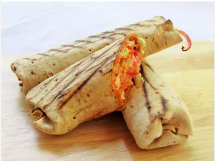

Shawarma Recipe

Description
Lasagna is a classic Italian dish made with layers of pasta, meat sauce, cheese, and béchamel sauce. It is a hearty and satisfying meal that is perfect for a special occasion or a casual dinner. Lasagna can be made with a variety of different meats, cheeses, and sauces, so there is sure to be a recipe that everyone will love.
Ingredients
For chicken
- 2 large chicken breasts with the skin on
- 1tsp of salt
- 1tsp of Coriander
- 1tsp of thyme
- 1tsp of black pepper
- 1tbsp of vegetable or olive oil
- 1tsp of dry grinded pepper or red chili flakes
- 2 garlic cloves(mashed or grated)
- ½ an inch of ginger
- 1tsp yaji powder (optional)
Vegetable mix:
- one small cabbage
- 2 plum tomatoes(chopped or sliced)
- 2 medium sized carrots(grated)
- one medium sizedpurple onion
For dressing:
- 10tbsps of light mayonnaise
- 3-4 tbsps. of sweet ketchup(optional)
- 1tsp of red chili flakes
- 2 garlic cloves(mashed or grated)
For wrap (depends on what you want):
- white or whole wheat flat bread
- burrito wrap
- pita bread
Steps
- Wash and pat chicken dry(make sure to keep all surfaces clean). Season with the salt, coriander, thyme, black pepper, red pepper, grated garlic, grated ginger and oil. set it aside for an hour or more
- Preheat your oven to 350 degrees. Meanwhile, in a none stick skillet or frying pan, sear the chicken on both sides; after which you pour in about ¼ cup of water or meat stock and transfer into the oven and cover to let it cook. (If your skillet is not oven proof, simply transfer the chicken into an oven tray with the water or stock and let it cook in the oven until it is done and the juices have run clear). Let the meat rest for a few minutes before you cut or shred
- Slice (at this point, toss the cut up or shredded chicken in the yaji powder)
- Chop all your vegetables and set aside together in a bowl
- Make the mix for the dressing by whisking it together and set aside
- You may warm the flat bread for 10 seconds if you want; then gradually assemble the veggies and chicken on to one end of the flat bread. Roll and tuck in the ends. You may wrap with a foil wrapper and leave in the oven to keep warm. You may also sear it on a none stick pan. This gives the roll a sweet crunch
- If using pita, slice it open down the middle and tuck all the veggies, chicken, and sauce into the Pita's pocket and enjoy!